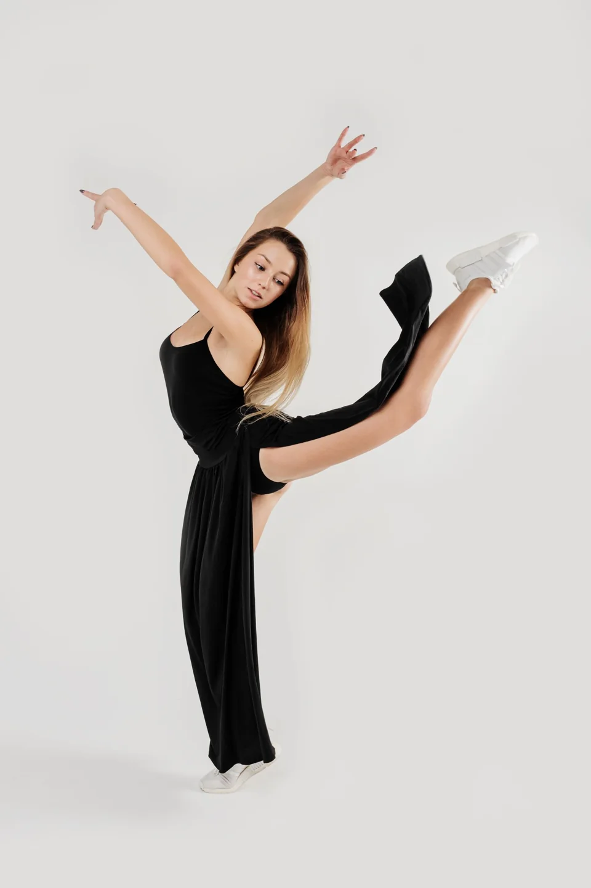

Для кого?
Ребёнок, подросток или взрослый — важно для выбора группы.
ТАНЦЫ ДЛЯ ДЕТЕЙ И ВЗРОСЛЫХ
Танцевальная студия для детей и взрослых
Современные и бальные танцы, хореография и постановка свадебного танца. Уточните доступные направления, группу и место занятий перед первым визитом.

Dance Park / О ПОДХОДЕ
Хочется ритма, пластики или знакомства с парными танцами? Опыт не должен мешать задать вопрос: расскажите студии, с чего вы начинаете.
ВЫБРАТЬ НАПРАВЛЕНИЕ
Выберите то, что ближе к вашей задаче.
Если нравится энергичная музыка и хочется попробовать хореографию.
Составить обращение ↗ПАМЯТКА
Ребёнок, подросток или взрослый — важно для выбора группы.
Без опыта или после занятий: расскажите о своей отправной точке.
Регулярных занятий, нового увлечения или подготовки к событию.
ПОЛЕЗНО ПЕРЕД ОБРАЩЕНИЕМ
Уточните место занятий, время, одежду и сменную обувь. Для свадебного танца заранее подготовьте музыку и дату события.
Подготовить запрос ↗ВАШ СЛЕДУЮЩИЙ ШАГ
Несколько деталей помогут точнее обсудить задачу. Полученный текст можно скопировать для сообщения или использовать при звонке.
ТЕКСТ НЕ ОТПРАВЛЯЕТСЯ АВТОМАТИЧЕСКИ
ПЕРЕД ВИЗИТОМ
Возможность занятий с нуля и актуальные группы уточняйте у студии.
Доступные дни, время и наличие мест уточняйте у администратора.
На Картах указан адрес Белорусская, 5; в справочниках встречается другой адрес. Подтвердите место перед первым визитом.
КОНТАКТЫ
Часы работы и детали визита уточните перед обращением.